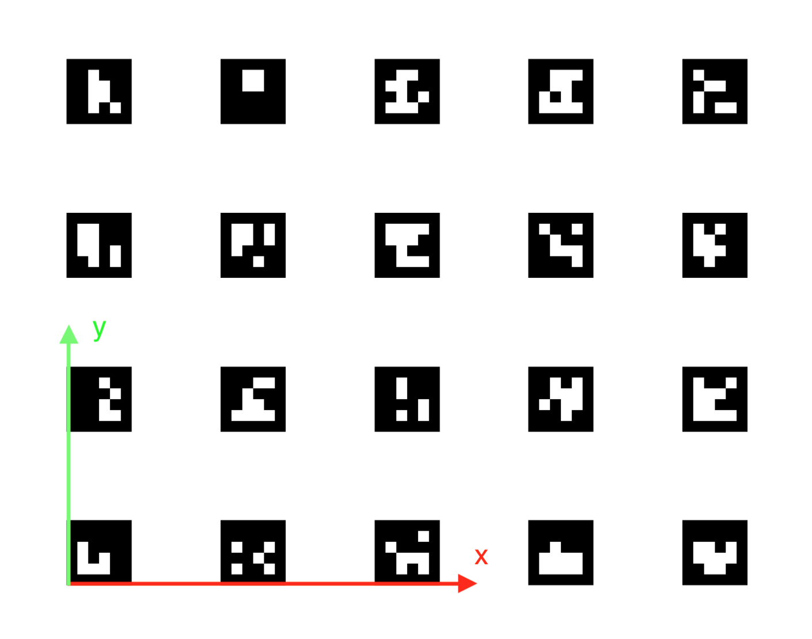
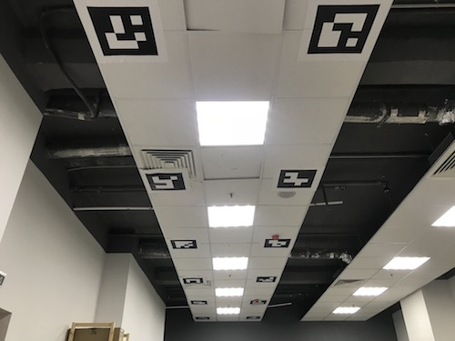

Navigation using ArUco markers
Documentation for the versions of image, starting with 0.15. For earlier versions, see documentation for version 0.14.
ArUco-Markers is a popular technology for positioning robotic systems using computer vision.
Examples of ArUco markers:

Use the most matte paper for printing visual markers. Glossy paper may glitter in the light, severely deteriorating the quality of recognition.
For rapid generation of markers for printing, you may use an online tool: http://chev.me/arucogen/.
aruco_pose
The aruco_pose module allows restoring the position of the copter relative to the map of ArUco markers and communicating it to the flight controller using the Vision Position Estimation mechanism.
If the source of the copter position by the markers is available, the option appears for precise autonomous indoor navigation by the positions using the simple_offboard module.
Turning on
Make sure that in the clever launch file (~/catkin_ws/src/clever/clever/launch/clever.launch), the start of aruco_pose and computer vision cameras is turned on:
<arg name="main_camera" default="true"/>
<arg name="aruco" default="true"/>
After the launch-file is edited, restart package clever:
sudo systemctl restart clever
Calibrating the ArUco marker map
An automatically generated ArUco-board may be used as a map of marks.
The map of marks is adjusted using file ~/catkin_ws/src/clever/clever/launch/aruco.launch. To use ArUco-board, enter its parameters:
<node pkg="nodelet" type="nodelet" name="aruco_pose" args="load aruco_pose/aruco_pose nodelet_manager">
<param name="frame_id" value="aruco_map_raw"/>
<!-- the type of the marker field -->
<param name="type" value="gridboard"/>
<!-- the number of markets along x -->
<param name="markers_x" value="1"/>
<!-- the number of markers along y -->
<param name="markers_y" value="6"/>
<!-- ID of the first marker (left top) -->
<param name="first_marker" value="240"/>
<!-- the length of the marker side in meters -->
<param name="markers_side" value="0.3362"/>
<!-- distance between the murders -->
<param name="markers_sep" value="0.46"/>
</node>
The vertical and horizontal distance between the markers may be set separately:
<!-- the horizontal distance between the markers -->
<param name="markers_sep_x" value="0.97"/>
<!-- the vertical distance between the marker -->
<param name="markers_sep_y" value="1.435"/>
If a map with a custom order of marker IDs is used, parameter marker_ids may be used:
<rosparam param="marker_ids">[5, 7, 9, 11, 13, 15]</rosparam>
The markers are numbered from the top left corner of the field.
For monitoring the map that is currently used by the copter for navigation, one can watch the content of topic aruco_pose/map_image. In a browser, it may be viewed with web_video_server by following the link http://192.168.11.1:8080/snapshot?topic=/aruco_pose/map_image:

When flying, make sure that the markers glued to the floor correspond to the map.
In topic aruco_pose/debug (http://192.168.11.1:8080/snapshot?topic=/aruco_pose/debug) the current result of markers recognitions is available:
TODO
The system of coordinates
According to agreement, the standard ENU system of coordinates is used in the marker field:
- x — rightward (conditional East);
- y — forward (conditional North);
- z — upward.
Note: the definition above is provided for a situation when the marker field is on the floor.
First, the zero is the bottom left point of the marker field. The yaw angle is considered zero when the copter is faced rightward(along the x-axis).

Configuring the flight controller
Correct Vision Position Estimation requires making sure (via QGroundControl) that:
For Pixhawk: Firmware with LPE (local position estimator) is installed. For Pixhawk download firmware
px4fmu-v2_lpe.px4.For Pixracer: parameter
SYS_MC_EST_GROUPshould be set tolocal_position_estimator, attitude_estimator_q.After changing the value of parameter
SYS_MC_EST_GROUPrestart the flight controller.- In parameter
LPE_FUSIONonly flagsvision position,land detectorare enabled. The final value 20. - Compass disabled:
ATT_W_MAG= 0 - Complimentary filter external heading weight:
ATT_W_EXT_HDG= 0.5 - Orientation by yaw by vision enabled:
ATT_EXT_HDG_M= 2MOCAP. - VPE settings:
LPE_VIS_DELAY= 0 sec,LPE_VIS_XY= 0.1 m,LPE_VIS_Z= 0.15 m. - Recommended settings for land detector:
COM_DISARM_LAND= 1 sLNDMC_ROT_MAX= 45 degLNDMC_THR_RANGE= 0.5LNDMC_Z_VEL_MAX= 1 m/s
Flight
A properly configured copter starts holding position by VPE (in modes POSCTL or OFFBOARD) automatically.
For autonomous flights do you will be able to use functions navigate, set_position, set_velocity. For flying to specific coordinates of the marker field, use frame aruco_map:
# First, the copter has to take off to see the map of marks
# and for frame aruco_map to appear:
navigate(0, 0, 2, frame_id='body', speed=0.5, auto_arm=True) # take off to the altitude of 2 meters
time.sleep(5)
# Flying to coordinate 2:2 of the marker field at the altitude of 2 meters
navigate(2, 2, 2, speed=1, frame_id='aruco_map') # flying to coordinate 2:2 at the altitude of 3 meters
See other functions simple_offboard.
Location of markers on the ceiling

To navigate by the markers placed on the ceiling, you need to set the main camera facing up and set the corresponding frame of the camera.
To set the map of markers in a "turned over" system of coordinates, change parameter aruco_orientation in file ~/catkin_ws/src/clever/clever/aruco.launch:
<param name="aruco_orientation" value="map_upside_down"/>
When this parameter is set, frame aruco_map will also be "turned over". Thus, to fly at the altitude of 2 meters below the ceiling, argument z should be set to 2:
```python navigate(x=1, y=2, z=1.1, speed=0.5, frame_id='aruco_map')